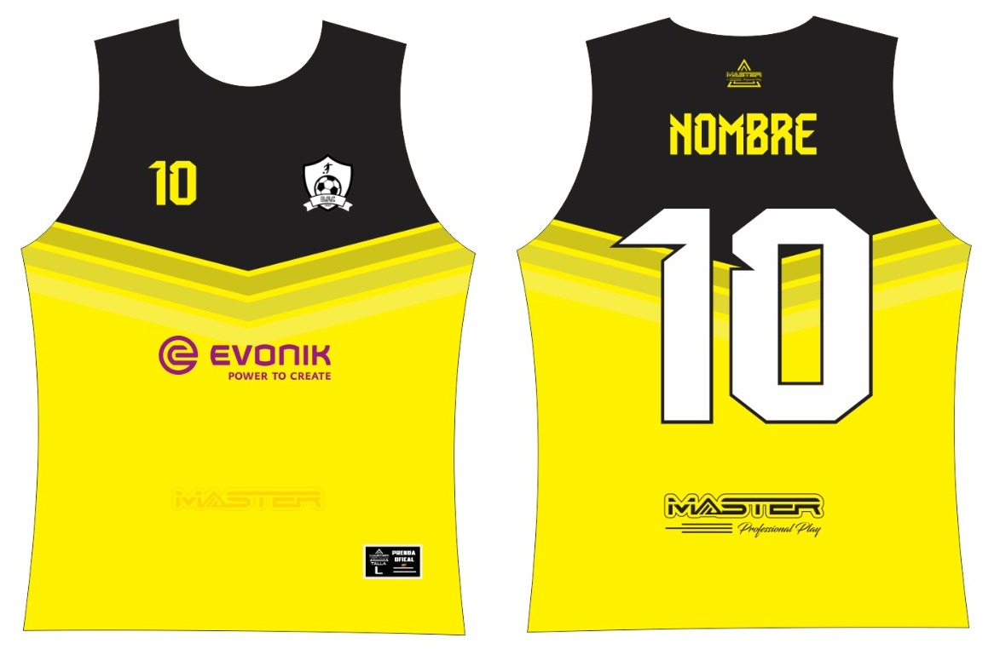

Historia del Equipo
Érase una vez, en el caluroso y sabrosón rincón de Santa Marta, que un grupo de valientes decidió fundar un equipo de fútbol en 2023. ¿Su objetivo? No solo sudar la camiseta, sino también hacer historia (o al menos intentarlo sin lesionarse).
Desde entonces, el equipo ha pateado balones, egos y estadísticas en canchas locales. Han tenido partidos tan épicos que hasta el árbitro pidió selfie. Con el tiempo, han ido subiendo de nivel: del barrio al torneo, del torneo al nacional… y ya sueñan con lo internacional (aunque sea una gira a jugar contra el Real Madrid… de Chibolo, Perú).
Pero lo que realmente distingue a este equipo es su espíritu inquebrantable y su sentido del humor. En cada partido, ya sea ganando o perdiendo, siempre hay risas, bromas y alguna que otra celebración improvisada (a veces incluso antes de que termine el partido).
Escudo
Plantilla de Jugadores
Augusto Ospino Rios
Posición: Portero
"Espejo empañado"
No tiene reflejo.
Edad: 25 años
Activo
Capitán
Fray Barrios
Posición: Director Tecnico
"El DT".
Descompone el partido.
Edad: 28 años
Activo
Tecníco
Jesus Barrios
Posición: Central
"El Ginecologo"
La toca pero no la mete.
Edad: 25 años
Activo
N/A
Hugo Rios
Posición: Delantero
"Globo con Helio"
Sube pero no baja.
Edad: 25 años
Activo
N/A
Emiro Pacheco
Posición: Defensa
"La Abeja"
Un pique y se muere.
Edad: 27 años
Activo
N/A
Nicolas Cabreras
Posición: Pivot
"Té de manzanilla"
No hace nada pero cae bien.
Edad: 24 años
Activo
N/A
Antonio Andrade
Posición: Mediocampista
"Iphone 8
Hace 10 años era bueno
Edad: 24 años
Cedido
N/A
Rafael Barrios
Posición: Defensa Central
"El Monumento"
Lo tenemos de adorno.
Edad: 22 años
Activo
N/A
Cesar Florez
Posición: Multifacetico
"Palito lleno de mierda"
No hay por donde agarrarlo.
Edad: 25 años
Activo
N/A
Uniforme del Equipo
Uniforme Local

Colores principales: Rojo-Negro
Uniforme Visitante
Colores principales: Amarillo-Negro
Historial de Partidos
| Fecha | Rival | Resultado | Lugar | Estado |
|---|---|---|---|---|
| 15/10/2025 | Polado FC | 5 - 5 | Estadio neutro | Empate |